Barra da Lagoa: Move to Barra da Lagoa, a fishing village where the lagoon flows into the sea. Across the suspension bridge and along a footpath you reach the Piscinas Naturais – rock pools you can swim in when the sea is calm.
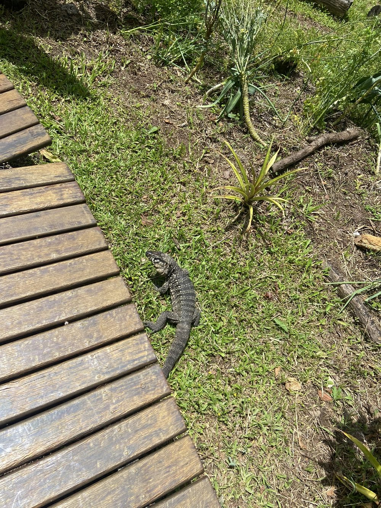
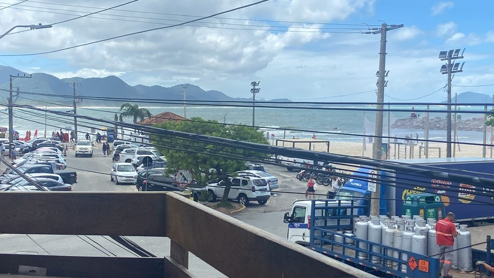
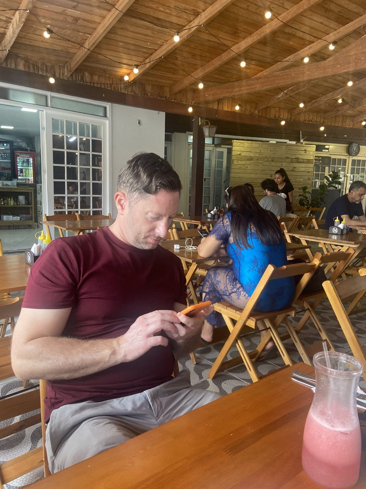
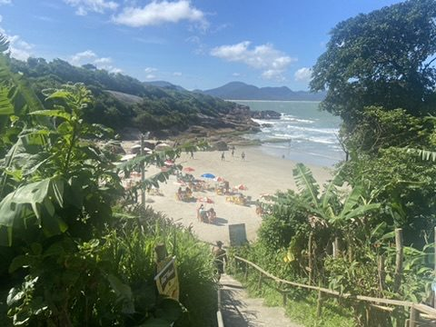
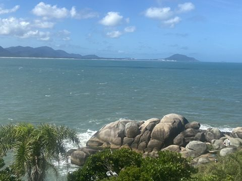
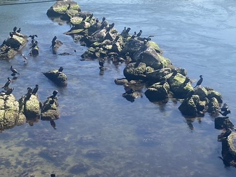
Joaquina Beach: Joaquina is the island's surf beach, backed by large sand dunes used by sandboarders. Coconut, beach stalls, and a lounge in the sand for sunset.
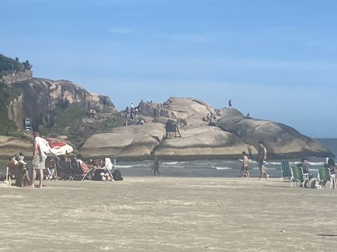
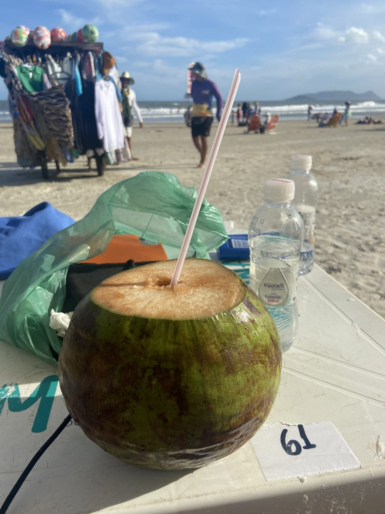
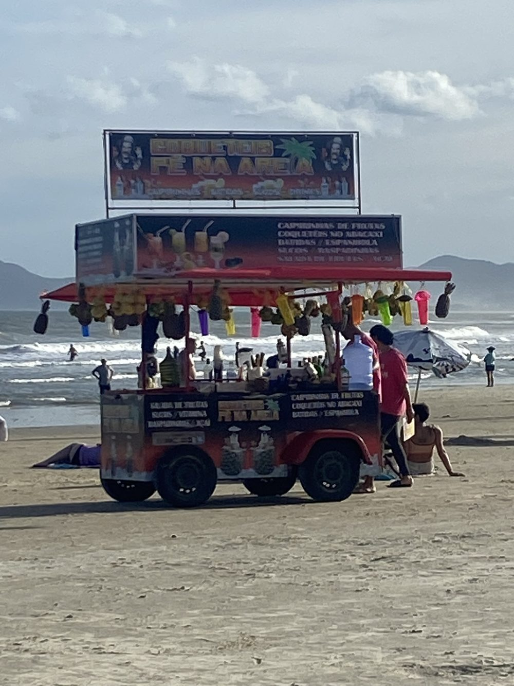
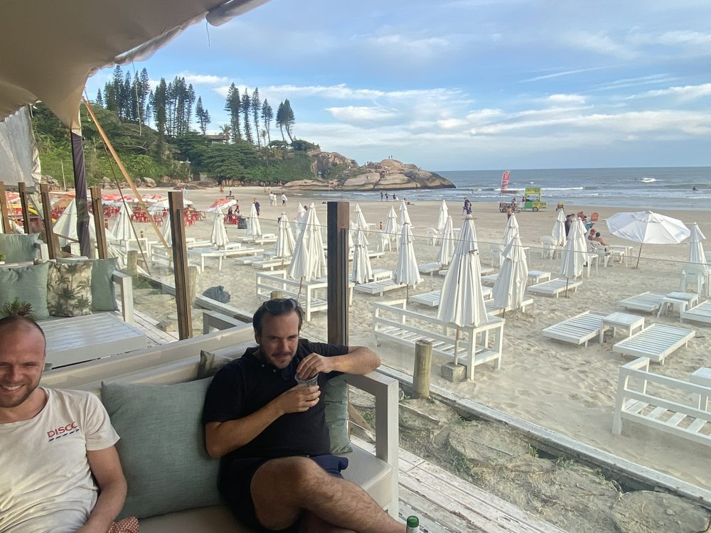
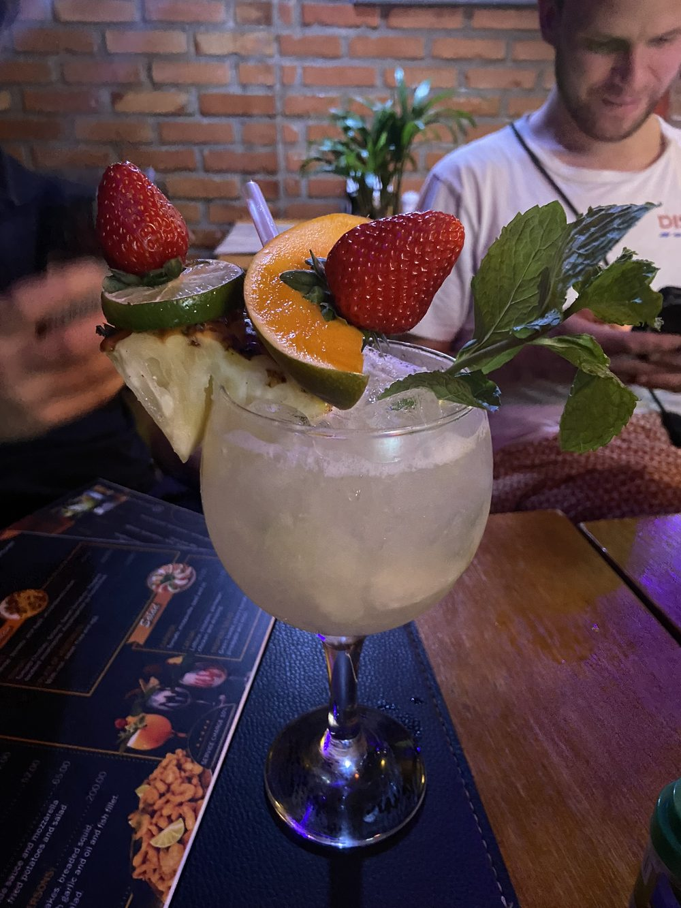
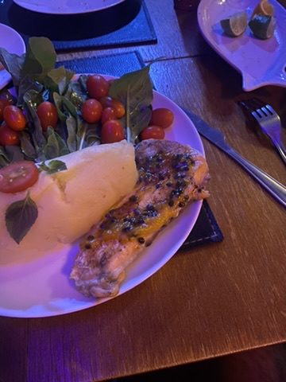
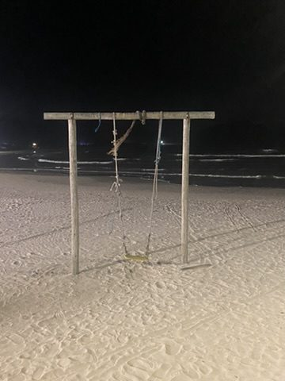